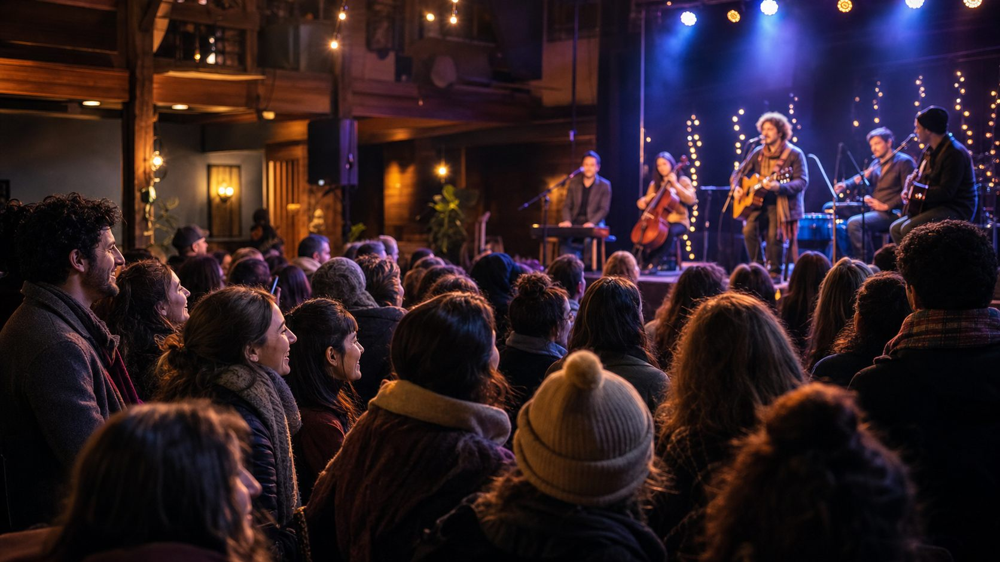

Santa Rosália
Feira da Vila Operária
Uma celebração da memória e da cultura do bairro Santa Rosália, realizada em conjunto com o Centro de Memória Operária de Sorocaba.

Memórias que conectam gerações
Mais que uma exposição de objetos.
A feira reúne história, cultura, alimentação e apresentações, construindo um encontro entre passado, presente e comunidade.